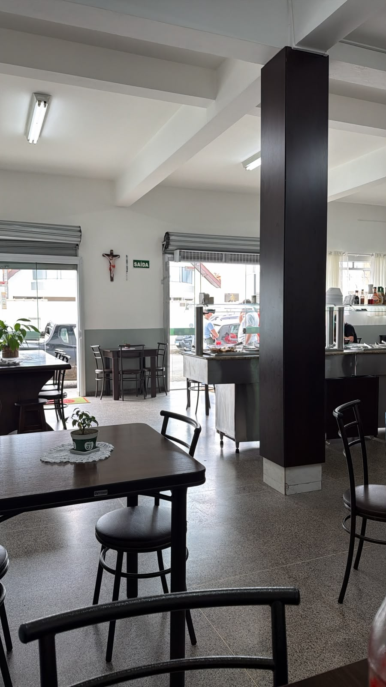
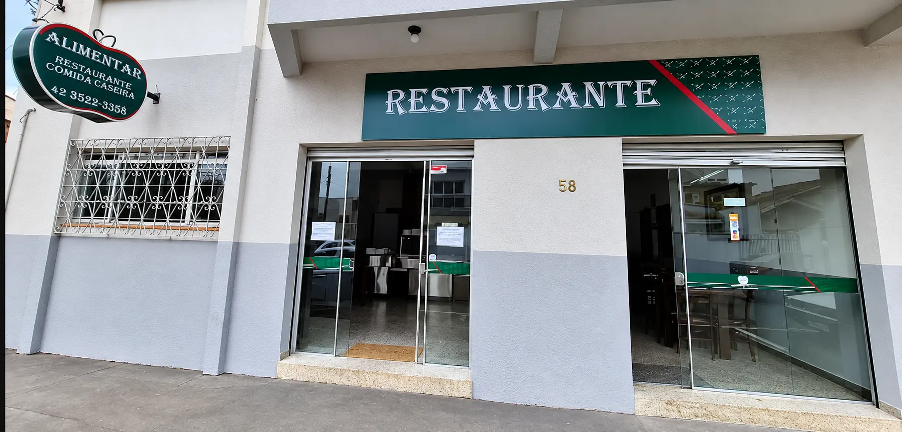

Buffet
Chegue no horário do almoço, escolha no buffet e sente-se à mesa. É simples assim.
Ver localizaçãoUma mesa para sentar, um buffet para escolher seu prato. E, para os dias corridos, marmitas que você pode consultar pelo WhatsApp.

Nosso salão, em Porto UniãoO salão da Alimentar tem mesas para quem prefere fazer uma pausa e almoçar no restaurante. A foto é daqui mesmo: este é o espaço que vai encontrar quando chegar.
Como chegarComentários publicados nas avaliações da Alimentar e reproduzidos em sua página pública.
Conferir a fonte ↗Comida ótima, acessível e ponto muito bem localizado!
Renata Azevedo · julho de 2026
excelente atendimento, comida de alta qualidade e limpeza extraordinária!
Guilherme Henrique · março de 2026
Estamos no bairro Santa Rosa, em Porto União. Veja a localização no mapa e abra a rota no celular.
Rua Expedicionário Eugênio Alves de Almeida